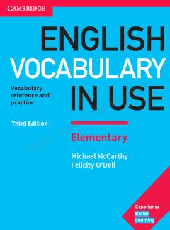

EVBoshlang'ich darajadagi o'quvchilar uchun ingliz tili so'z boyligini oshirish qo'llanmasi.
Ushbu kitob boshlang'ich bosqichdagilar uchun ingliz tili so'z boyligini oshirishga mo'ljallangan amaliy qo'llanma hisoblanadi. Unda kundalik hayotda eng ko'p ishlatiladigan so'zlar, iboralar va mavzuli lug'atlar qulay tushuntirishlar hamda mashqlar yordamida berilgan. Uchinchi nashr zamonaviy mavzular, jumladan, internet va texnologiyalarga oid yangi birliklarni o'z ichiga oladi.